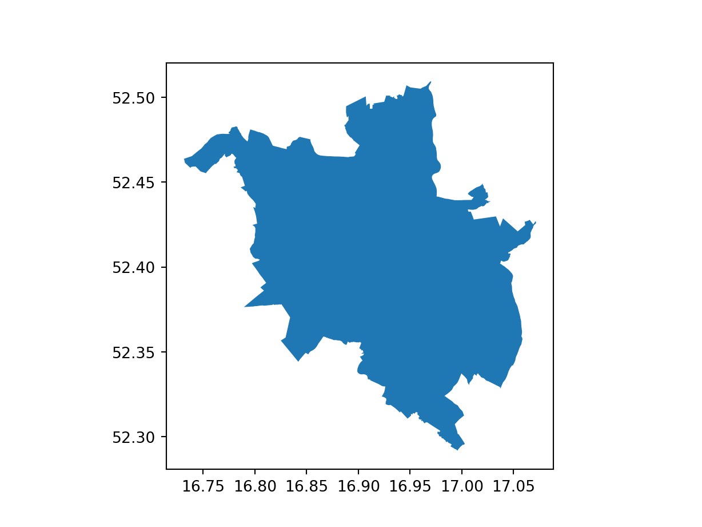

How to process small amounts of OSM data using the osmdata R package
How to process large OSM ‘extracts’ data with the osmextract R package
Other command line tools for working with OSM data, including the mature and widely used osmium tool, the pyrosm Python package and the osm2streets web application and Rust codebase
Finally, the session will outline ideas for using OSM data to support the fast and fair decarbonisation of the global economy.
Prerequisites
To participate in the session, all you need is R and following packages:
osm2streets (although this is currently mostly a web UI and does not have a command line interface)
We will get data representing case study areas:
How and where to download OSM data
There are two main ways to download OSM data:
In small amounts, which you can get from osm.org directly, and from services that host the Overpass API and provide free access.
In large amounts, which you can get from a smaller number of extract providers. Because the focus of this session is on large amounts of data, and because providers of small uncompressed datasets cannot scale to national or global datasets, we will focus on this second way of getting data, with key providers described below.
Uncompressed OSM providers
Queries to Overpass API providers can be made directly from the Overpass Turbo web application, which has a convenient web interface that is ideal for exploring the data and writing queries iteratively.
Overpass users the Overpass QL, an example of which is provided below. You can see the results of a query at this endpoint, for example: https://overpass-turbo.eu/?Q=%28%0A+++node%2851.249%2C7.148%2C51.251%2C7.152%29%3B%0A+++%3C%3B%0A%29%3B%0Aout+meta%3B
This can be written in Overpass QL as:
(
node(51.249,7.148,51.251,7.152);
<;
);
out meta;
After saving this query as a file (e.g. called query.txt), you can download the data using the curl command line tool as follows:
curl-X POST -H"Content-Type: application/x-www-form-urlencoded"-d @query.txt https://overpass-api.de/api/interpreter > data.osm
As outlined in the providers_comparison vignette in the osmextract package, there are several providers of OSM data. The main ones that provide regular extracts without need for logins are:
Data (c) OpenStreetMap contributors, ODbL 1.0. https://www.openstreetmap.org/copyright.
Check the package website, https://docs.ropensci.org/osmextract/, for more details.
library(sf)
Linking to GEOS 3.10.2, GDAL 3.4.1, PROJ 8.2.1; sf_use_s2() is TRUE
Extracts from each provider are shown in the figures below, generated by code that can be ‘unfolded’ by clicking on the arrows:
Geofabrik
geofabrik is a company that provides map-based services and free downloads of OSM extracts that are updated daily. These extracts are based on a division of the world into different regions, at 4 different levels. Zones in level 1 cover a whole continent (plus Russian Federation):
Code
par(mar =rep(0, 4))plot(geofabrik_zones[geofabrik_zones$level ==1, "name"], key.pos =NULL, main =NULL)
Level 2 contains polygons representing several countries all around the world:
Code
plot(geofabrik_zones[geofabrik_zones$level ==2, "name"], key.pos =NULL, main =NULL)
Geofabrik also defines several special zones, such as Alps, Britain and Ireland, Germany, Austria and Switzerland, US Midwest, US Northeast, US Pacific, US South and US West (level 3). Moreover, it contains extracts relative to some administrative subregions, mainly in Europe, Russia, Canada and South America:
Code
plot(geofabrik_zones[geofabrik_zones$level ==3, "name"], key.pos =NULL, main =NULL)
openstreetmap_fr extracts are taken from http://download.openstreetmap.fr/, a web-service that provides OSM data updated every few minutes. The extracts are based on several regions, such as the continents (level 1):
Code
# Russian federation is considered as a level 1 zoneplot(openstreetmap_fr_zones[openstreetmap_fr_zones$level ==1, "name"], key.pos =NULL, main =NULL)
or some countries around the world (less than geofabrik’s level 2 zones):
Code
plot(openstreetmap_fr_zones[openstreetmap_fr_zones$level ==2, "name"], key.pos =NULL, main =NULL)
India,
Code
plot(openstreetmap_fr_zones[openstreetmap_fr_zones$parent =="india", "name"], key.pos =NULL, main =NULL)
bbbike provider is based on https://download.bbbike.org/osm/bbbike/. It is quite different from any other provider supported in osmextract since it contains OSM data for more than 200 cities worldwide.
bbbike provider is the safest choice if you are looking for OSM data relative to a particular city in the world.
How to process small amounts of OSM data using the osmdata R package
The osmdata package is a mature and widely used tool for working with OSM data in R. It is designed to work with small amounts of data, such as the area around a city or a country. It is not designed to work with large amounts of data, such as the whole of Europe or the world. For that, we need a different approach, which is covered in the next section.
How to process large OSM ‘extracts’ data with the osmextract R package
The quickest way to get large OSM datasets in R (and possibly in any data analysis framework) is to use the osmextract package.
The package makes your life easy by automating many parts of the OSM extract identification, download, and processing pipeline, so you can focus on the analysis and high-impact reasearch!
Finding an extract to download
Let’s see how it works for the city of Poznan:
We geocode the coordinates of Poznan, Poland
poznan = tmaptools::geocode_OSM("Poznan, Poland")$coords# poznan = c(x = 16.933, y = 52.408)
and look for a match in the OSM extracts using oe_match():
Note: you can check the location where datasets will be downloaded and translated using the oe_download_directory() function (see ?oe_download_directory for details).
We uploaded data for Poznan to github.com/Robinlovelace/opengeohub2023/releases. For future reference, you can access the 25 MB PBF file from https://github.com/Robinlovelace/opengeohub2023/releases/download/v2/bbbike_Poznan.osm.pbf
Warning in CPL_read_ogr(dsn, layer, query, as.character(options), quiet, :
automatically selected the first layer in a data source containing more than
one.
monaco = sf::read_sf(f[2], layer ="lines")
Let’s take a look at the size of each layer, in units of MB:
Reading layer `pois_buffer_simple' from data source
`https://github.com/Robinlovelace/opengeohub2023/raw/main/pois_buffer_simple.geojson'
using driver `GeoJSON'
Simple feature collection with 1 feature and 0 fields
Geometry type: POLYGON
Dimension: XY
Bounding box: xmin: 16.92972 ymin: 52.45306 xmax: 16.96174 ymax: 52.47165
Geodetic CRS: WGS 84
Other command line tools for working with OSM data
pyrosm
Install the Python package pyrosm as follows:
pip install pyrosm
Search for Poznan in extracts available from pyrosm as follows (note: this fails for me currently as documented in github.com/HTenkanen/pyrosm/issues/217):
/home/runner/.virtualenvs/r-reticulate/lib/python3.10/site-packages/geopandas/_compat.py:124: UserWarning: The Shapely GEOS version (3.11.1-CAPI-1.17.1) is incompatible with the GEOS version PyGEOS was compiled with (3.10.4-CAPI-1.16.2). Conversions between both will be slow.
warnings.warn(
import pandas as pdimport geopandas as gpd# Get cycle netework for Poznanpoznan_polygon = ox.geocode_to_gdf("Poznan, Poland")poznan_polygon.plot();

That is quite a big network, so let’s get the area of the polygon and use that to get a smaller network from GitHub:
# Get data from https://github.com/Robinlovelace/opengeohub2023/raw/main/pois_buffer_simple.geojson:poznan_small = gpd.read_file("https://github.com/Robinlovelace/opengeohub2023/raw/main/pois_buffer_simple.geojson")poznan_small.plot();
Use the query argument of oe_get() to download only cycleways from the bbbike extract of Poznan (note: you may need to use force_vectortranslate = TRUE to update the data in the .gpkg file).
Develop a more sophisticated query to get an active travel network for Poznan
Bonus: add highways that are not footways/cycleways etc to ‘fill the gaps’ in the network generated in the preview step.
Bonus: generate a simple measure of walkability or cyclability, perhaps with reference to the academic literature on ‘LTS’, the results shown in acteng/cyclability, or other source.
Bonus bonus: where would you prioritise new active travel infrastructure in Poznan based on these results?
Ideas for using OSM data
Take a look at the a-b-street/osm2streets repo and web app. Download .geojson files representing 2D extrusion of the network and explore in R, Python or a tool of your choice.